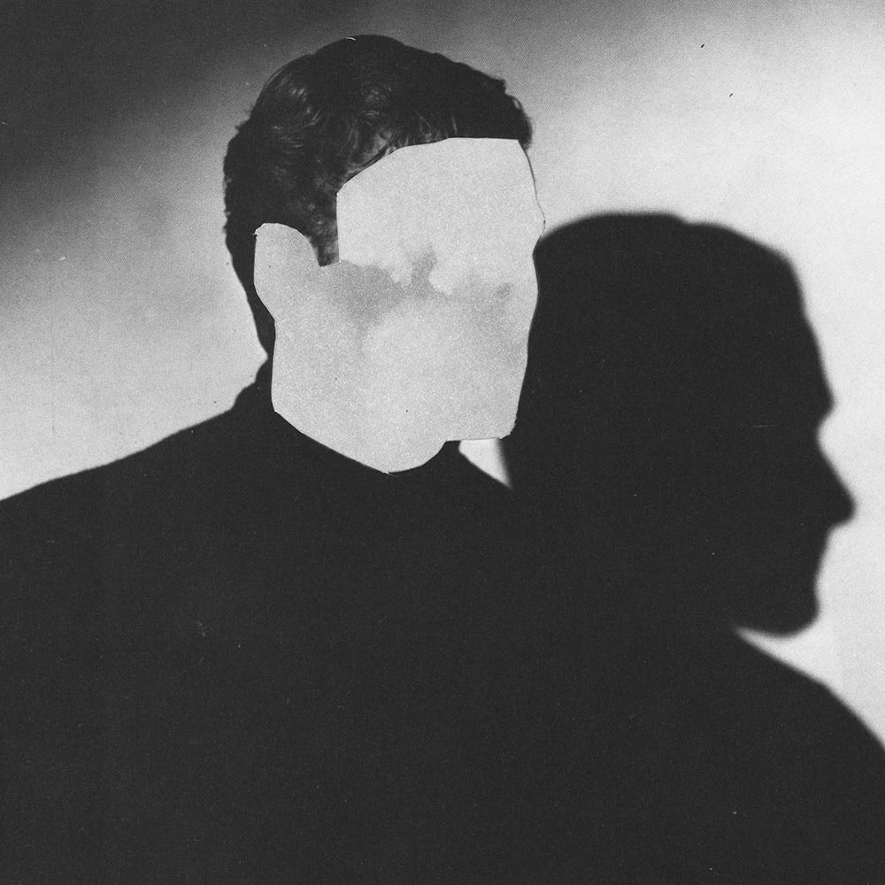
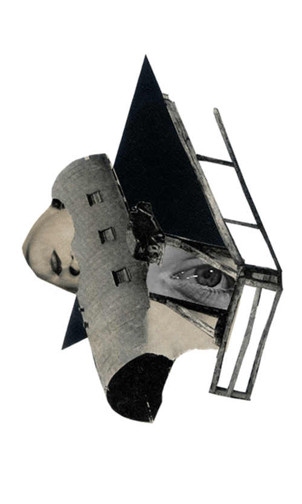
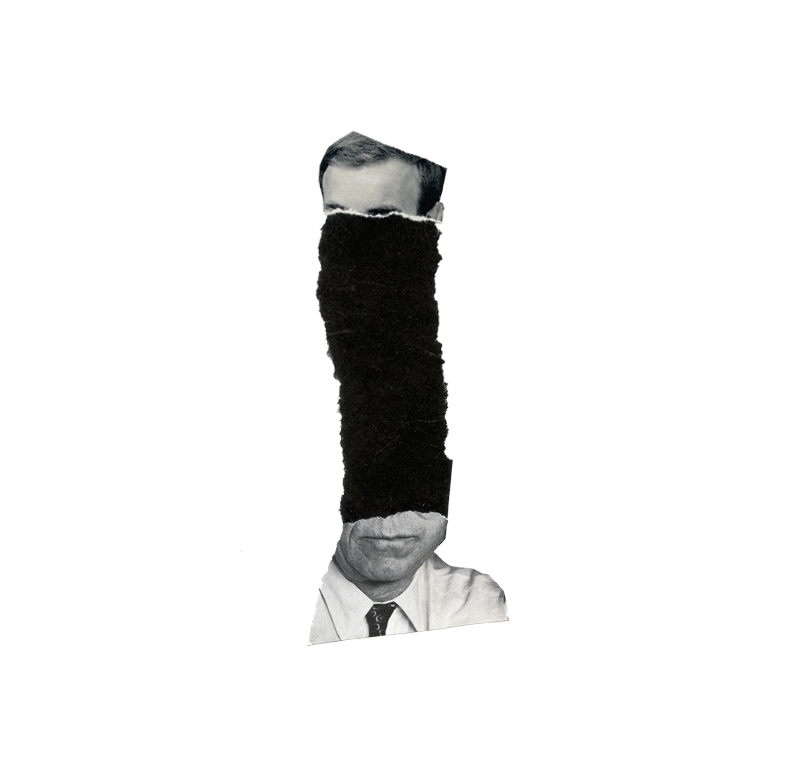

<!DOCTYPE html>
<html>
	<head>
		<meta charset="UTF-8" />
		<meta name="viewport" content="width=device-width, initial-scale=1.0" />
		<link href="dist/output.css" rel="stylesheet" />
		<link rel="icon" href="images/favicon.ico" />
		<script
			src="https://kit.fontawesome.com/c268af5e4f.js"
			crossorigin="anonymous"
		></script>
		<link
			rel="stylesheet"
			href="https://fonts.sandbox.google.com/css2?family=Material+Symbols+Outlined:opsz,wght,FILL,GRAD@48,400,0,0"
		/>
		<title>João Mira</title>
	</head>
</html>
<body>
	<!--Intro section-->
	<div class="bg-surfCrest h-screen">
		<div class="grid grid-cols-1 pt-44">
			<h1 class="font-Cutive text-4xl mx-auto tracking-tighter text-gray-800">
				I'm João Mira
			</h1>
			<span class="font-IBM mx-auto font-extralight text-sm mt-6 text-gray-800"
				>A Product Manager who fixes things</span
			>
			
		</div>
	</div>
	<!--Profile section-->
	<div class="mt-10 ml-10 mr-10 mb-4 lg:mt-28 lg:ml-28 lg:mr-28 lg:mb-4">
		<div class="grid grid-cols-1">
			
			<h2 class="mx-auto font-IBM text-2xl mt-8 text-gray-800 hover:italic">
				Hello.
			</h2>
			<p
				class="text-gray-800 tracking-tight mx-auto font-IBM text-sm font-light mt-8 w-full lg:w-2/3 md:w-full text-center leading-8"
			>
				I'm a Product Manager who enjoys solving digital problems.
			</p>
			<p
				class="tracking-tight mx-auto font-IBM text-sm font-light w-full lg:w-2/3 md:w-full text-center leading-8"
			>
				I was born in the south of Portugal in the summer of '89 and have been
				based in Berlin since 2016.
			</p>
		</div>
		<hr class="text-surfCrest w-1/3 mx-auto border-[0.0625em] my-12" />
		<div class="grid grid-cols-1">
			<h2 class="mx-auto font-IBM text-2xl text-gray-800 hover:italic">
				My Skills
			</h2>
			
			<h3 class="mx-auto font-IBM text mt-4 text-gray-800">Digital Products</h3>
			<p
				class="text-gray-800 tracking-tight mx-auto font-IBM text-sm font-light mt-8 w-full lg:w-2/3 md:w-full text-left leading-8"
			>
				I've been a tech-enthusiast and an early adopter of software products
				since I discovered
				<a
					href="https://en.wikipedia.org/wiki/Napster"
					class="underline text-black font-medium"
					>Napster</a
				>
				in 2000 while browsing the web on my 56k modem. From that moment on, the
				internet became my second home.
				<br />
				<br />
				Professionally, I've assisted customers at SaaS companies like
				<a
					href="https://www.hootsuite.com/"
					class="underline text-black font-medium"
					>Hootsuite</a
				>, managed the development of media websites such as
				<a
					href="https://startupguide.com/"
					class="underline text-black font-medium"
					>Startup Guide</a
				>
				and
				<a
					href="https://impactindex.startupguide.com/"
					class="underline text-black font-medium"
					>Impact Index</a
				>, and am currently focused on enhancing various e-commerce businesses,
				including
				<a
					href="https://www.hellobody.de/"
					class="underline text-black font-medium"
					>HelloBody</a
				>.
			</p>
			
			<h3 class="mx-auto font-IBM text mt-4">Hobbies</h3>
			<p
				class="tracking-tight mx-auto font-IBM text-sm font-light mt-8 w-full lg:w-2/3 md:w-full text-left leading-8"
			>
				I enjoy taking walks outdoors and capturing moments with my Fuji X-Pro
				3. Check out some examples below or
				<a
					href="https://www.instagram.com/jtarget/"
					class="underline text-black font-medium"
					>click here</a
				>.
				<br />
				<br />
				When I travel, I'm torn between exploring bustling, chaotic cities and
				seeking out remote, hidden areas. One of my all-time favorite trips was
				to Japan, where I oddly ended up making a
				<a
					href="youtube.com/watch?v=FTYayWptFgY"
					class="underline text-black font-medium"
					>vertical video</a
				>. Recently, I headed to a tiny island in Honduras to get my
				<a
					href="https://en.wikipedia.org/wiki/Advanced_Open_Water_Diver"
					class="underline text-black font-medium"
					>scuba diving license</a
				>.
				<br />
				<br />
				In the last few years, I've been diving into coding, and this website is
				one of my projects. I built it using
				<a
					href="https://tailwindcss.com/"
					class="underline text-black font-medium"
					>Tailwind CSS</a
				>, and you can check out the source code
				<a
					href="https://github.com/jtarget/cv-2.0"
					class="underline text-black font-medium"
					>here</a
				>.
				<br />
				<br />
				My next goal is to improve my German skills to B2 level. I'm not there
				yet, but I'll write this here as an extra source of motivation.
			</p>
			<div class="lg:w-1/2 mx-auto mt-8">
				<div
					id="carouselExampleControls"
					class="carousel slide relative"
					data-bs-ride="carousel"
				>
					<div class="carousel-inner relative w-full overflow-hidden">
						<div class="carousel-item active relative float-left w-full">
							
						</div>
						<div class="carousel-item relative float-left w-full">
							
						</div>
						<div class="carousel-item relative float-left w-full">
							
						</div>
					</div>
					<button
						class="carousel-control-prev absolute top-0 bottom-0 flex items-center justify-center p-0 text-center border-0 hover:outline-none hover:no-underline focus:outline-none focus:no-underline left-0"
						type="button"
						data-bs-target="#carouselExampleControls"
						data-bs-slide="prev"
					>
						<span
							class="carousel-control-prev-icon inline-block bg-no-repeat"
							aria-hidden="true"
						></span>
						<span class="visually-hidden">Previous</span>
					</button>
					<button
						class="carousel-control-next absolute top-0 bottom-0 flex items-center justify-center p-0 text-center border-0 hover:outline-none hover:no-underline focus:outline-none focus:no-underline right-0"
						type="button"
						data-bs-target="#carouselExampleControls"
						data-bs-slide="next"
					>
						<span
							class="carousel-control-next-icon inline-block bg-no-repeat"
							aria-hidden="true"
						></span>
						<span class="visually-hidden">Next</span>
					</button>
				</div>
			</div>
		</div>
		<hr class="text-surfCrest w-1/3 mx-auto border-[0.0625em] my-12" />
		<div class="grid grid-cols-1">
			<h2
				class="mx-auto font-IBM text-2xl text-gray-800 hover:italic"
				name="contact"
			>
				Get In Touch
			</h2>
			<p
				class="text-gray-800 tracking-tight mx-auto font-IBM text-sm font-light mt-8 w-full lg:w-2/3 md:w-full text-center leading-8"
			>
				Feel free to drop me a line via email. <br />
				In case you want to check what I've been doing in more detail, my CV is
				available for download.
			</p>
			<div class="lg:flex mx-auto">
				<a
					class="mr-2 lg:mx-8 uppercase box-border active:top-[0.2em] inline-block shadow-classic text-white mx-auto bg-surfCrest rounded-sm mt-8 font-IBM px-[1.4em] py-[0.7em] border-[0.0625em] border-solid relative border-surfCrest text-sm hover:shadow-inner"
					href="mailto:hello@joaomira.com"
					>Contact me
				</a>
				<a
					class="ml-2 lg:mx-8 uppercase box-border active:top-[0.2em] inline-block shadow-classic text-white mx-auto bg-surfCrest rounded-sm mt-8 font-IBM px-[1.4em] py-[0.7em] border-[0.0625em] border-solid relative border-surfCrest text-sm hover:shadow-inner"
					href="images/Joao_Mira_CV.pdf"
					download="Joao_Mira_CV"
					>Download CV</a
				>
			</div>
		</div>
		<div class="mt-20">
			<div class="flex justify-center">
				<a
					class="mx-8 font-IBM text-sm text-[#7a8c78] hover:text-black font-light hover:shadow-classic"
					href="https://www.linkedin.com/in/joaomira/"
					>LinkedIn</a
				>
				<a
					class="mx-8 font-IBM text-sm text-[#7a8c78] hover:text-black font-light hover:shadow-classic"
					href="https://www.instagram.com/jtarget/"
					>Instagram</a
				>
				<a
					class="mx-8 font-IBM text-sm text-[#7a8c78] hover:text-black font-light hover:shadow-classic"
					href="impressum.html"
					>Impressum</a
				>
			</div>
			<div class="grid grid-cols-1 mt-4">
				<p class="mx-auto font-IBM text-xs text-gray-400 font-light">
					© 2022 João Mira
				</p>
			</div>
		</div>
	</div>
	<script src="node_modules/tw-elements/dist/js/index.min.js"></script>
</body>
